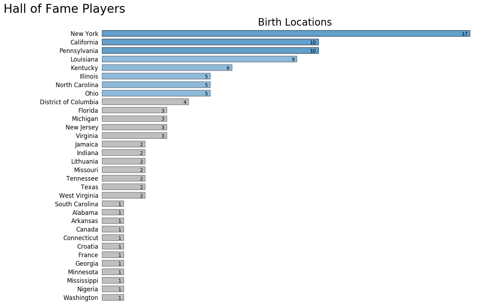

In Progress
Who's heading to the Hall of Fame?
"Some people want it to happen, some wish it would happen, others make it happen."
~Michael Jordan
Background

# TODO Background
An important detail about the Naismith Memorial Basketball Hall of Fame is that it's for all Basketball. This means there are many player subcategories in the Hall.
- Collegiate athletes
- Greats from the women's game
- Historic figures who played prior to the formation of the NBA
- NBA Stars
- Players from other countries
For this project we are concentrating on the inductees that played in the NBA. That means the calibration data sample size is reduced from 167 to 111.
# TODO Birth Locations
# TODO College attendees

Strategy
# TODO Strategy

Analysis
# TODO Analysis Distribution of Number of Features plot optimum (method runs repeated tests) 47 is the optimal
# TODO make features table position age team games games_started minutes_played efficiency_rating true_shooting_pct 3_point_average_attempts ftr offensive_rebound_pct defensive_rebound_pct total_rebound_pct assist_pct steal_pct block_pct turnovers_pct usage_pct offensive_win_shares defensive_win_shares win_shares win_shares_48 offensive_box_plus_minus defensive_box_plus_minus box_plus_minus value_over_replacement_player field_goals field_goal_attempts field_goal_pct 3_pointers 3_painters_attempts 2_pointers 2_pointers_attempts 2_pointers_pct effective_field_goal_pct free_throws free_throw_attempts free_throw_pct offensive_rebounds defensive_rebounds total_rebounds assists steals blocks turnovers fouls points


Conclusion
# TODO Conclusion
Data Files
The following data files were used in the project.
| Data File | Original Source |
|---|---|
Naismith Memorial Basketball Hall of Fame List |
NBA Website
All Basketball Hall of Fame Inductees
|
Player Dataset |
kaggle Website
NBA Player Details
|
Season Statistics |
kaggle Website
NBA Player Metrics by Season
|
Source Code
Python Modules
Follow this link to view the project's modules.
Note:
To create the geographic plots a
Google API Key
is required.
The key is easy to obtain, but make sure to not share your
key.
For more details check out Google's site.
Versions
This study was completed using the Anaconda distribution of Python 3.6.2.